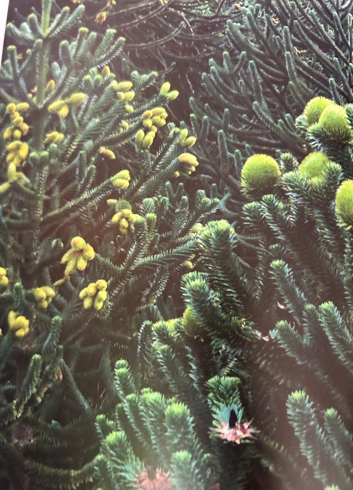
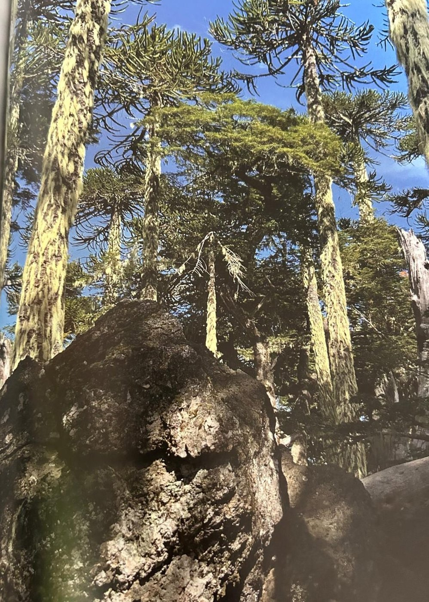

Groepen › Nieuwe Wereld
10. Chili & Argentinië, Andesgebergte

Zeer opvallend langs de Koninklijke Wandeling, maar eigenlijk misplaatst tussen de Noord-Amerikaanse arboretumgroepen, prijken de Slangendennen of Apenverdrietbomen in Groep 10. Hun Latijnse naam Araucaria araucana is afgeleid van de provincie Arauca in midden-Chili. Vanwege hun scherpe, gladde bladschubben, een overblijfsel van bladvormen in pre-paleolithische tijden, zijn deze bomen ongenaakbaar. De Araucaria’s.staan vergezeld van enkele schijnbeuken of zogenaamde zuidelijke beuken, soorten die, hoewel ze in dezelfde taxonomische orde van de Fagales vallen, nog weinig met onze beuk vandoen hebben. Plantensoorten van het zuidelijk halfrond hebben weinig gemeen met die van het noordelijk halfrond. Maar sommige soorten schijnbeuk leveren wel robuust goed hardhout, de Robleschijnbeuk bijvoorbeeld (erg verwarrend: roble is Spaans voor eik). De struikvormige Kaneelschijnbeuk met zijn fijne gekartelde blaadjes wordt in tuinen wel eens als sierstruik gebruikt en de in de winter bladhoudende Magelaanschijnbeuk is ook heel aantrekkelijk.
Uit het boek
0,30 ha · 7 soorten · 143 bomen
- De enige groep van het zuidelijk halfrond. In 1905–07 werden 42 slangedennen geplant; pas in 1968 gaven ze voor het eerst zaad. Sinds 2008 sterven de oudste bomen.


Bron: Geografisch Arboretum Tervuren. Een wereldreis rond bomen (2020), p. 128 en volgende.
Deelgroepen
- 10 – Andesgebergte, Chili
Soorten in deze groep (7)
- Araucaria araucanaSlangeden · 126 bomen
- Nothofagus antarcticaKaneelschijnbeuk · 11 bomen
- Nothofagus betuloidesMagellaanschijnbeuk · 2 bomen
- Nothofagus nervosa1 boom
- Nothofagus obliqua1 boom
- Nothofagus species1 boom
- Saxegothaea conspicua1 boom
Tekst en foto: arboretum-tervuren.be (Koninklijke Schenking), met toestemming gebruikt.